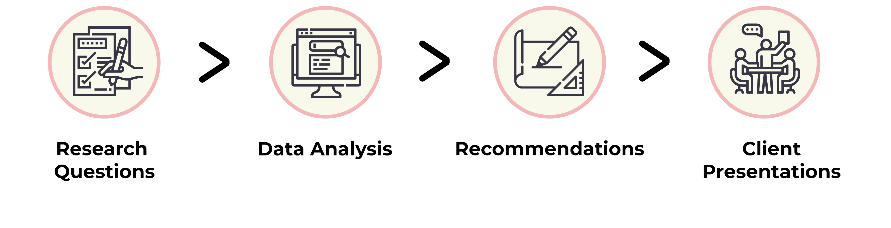

-
Client:
The Metropolitan Museum of Art
-
Guide:
Prof. Craig MacDonald
-
Team
Raunak Jangid, Kyle Kisicki, Chris Denney, Xiujie Bi
-
Tools:
Tobii Pro X2, Tobii Pro Lab, Excel
-
Project timeline:
4 weeks, Fall 2021
Improving how users find and consume content on the MET website
Being one of the most huge and glamorous museum on the planet the MET attracts millions of visitors from across the globe. For the selected few who can’t make it in person, the MET website serves as a great resource to view and interact with MET’s art collection. For this study we partnered with MET to conduct eye tracking study on their website and improve the ways in which users consume content.
my role
I worked alongside Chris, Kyle, Raunak and Xiujie to define and conduct eye tracking study on the MET’s website. We conducted a total of 10 eyes tracking sessions and analyzed them together as a team. I moderated 3 sessions and took notes for another 2, I also analyzed different metrics using the Tobii Pro lab to gather more tangible insights. Actively participating in team meetings I contributed in planning and setting up the pilot tests, the final study and compiling together the final recommendations.
define + analyze + recommend + present
Understanding the Problem
During our first client meeting the MET team provided us with a comprehensive list focus areas they are looking forward to solve through this study. The document detailed all the pages under consideration, topics of inquiry and the user groups of interest. Honestly, we were really thankful to the team at MET for providing such a detailed document, it helped us focus better and gather more meaningful insights.
Defining Project scope
Keeping in mind the timeline we decided to focus on specific pages that were highlighted in the focus area document. The 2 major sections of the website we focused on are the Close Look Articles and the Collection Experience.
Art Students and Museum Visitors
Given the complexity of inviting unaffiliated participants to the Pratt campus, we decided on focus our recruitment efforts within the Pratt community. Since all the groups were recruiting from (more or less) a small subset of participants, we decided to join forces and combine our recruitment efforts making sure that no one participant is testing with multiple teams.
We recruited 10 participants: 7 graduates, 2 undergraduates, and 1 unaffiliated participant. All the participants were frequent museum visitors and had at least a generalist interest in art ranging from highly interested to somewhat interested.
Tools and Methodologies
The tools we used for this study include the Tobii Pro X2, the eye tracking hardware and Tobii Pro Lab to analyze our recordings and calculate metrics most relevant to our study. In addition to these we used a combination of pre-test, post-test questionnaire, System Usability Scale(SUS), Areas of Interest(AOI), Time of Interest(TOI), Heatmaps, Fixation Points, Gazeplots and Retrospective Think Aloud(RTA).
Task Descriptions
- Close look articles: We asked users to spend some time exploring the Close Look article as they usually would.
- The Collection Experience: We asked users to browse through the MET Art Collection page and learn about an artwork that interests them.
- The Collection Experience: Imagine studying Pablo Picasso at school and researching his artwork drawn using Graphite in Cubism style. Search for any artwork in the criteria in the Collection and learn more about it.
Analyzing data from Gaze Replays
We started our analysis by reviewing our participants' gaze replays and RTA recordings to capture any relevant insights. To back up our initial findings from the gaze replays we used metrics including TOI, AOI and heatmaps.
We used an excel template to analyze results from the SUS survey form. Looking at the data the results for the MET website were pretty good. It scored a 78.3 on the mean SUS score, 77.5 for the usability score and an 81.3 on the learnability score. What these numbers really mean is that a new user can easily and quickly understand how to interact with the website. The percentile range for the MET website based on the SUS score is 80-84.
Close Look Articles
What worked well?
The participants really liked the correlation between the text and the image and fact that the image moved to focus on minor details that might otherwise have been missed. It provided them with a unique perspective to appreciate the artwork.
“It was interesting how when the text was referencing a part of the piece…it would kind of zoom in on that. It’s not like you have to look for it, they’re already showing it to you. I like that as well, and it allows for better understanding.”– Participant A
Long scroll: Users loose interest
Problem Overview: Although after spending sometime on a particular close-look page the participants felt uninterested and lost and wanted a way out to maybe explore other sections of the website. The lack of any navigation options forced them to scroll all the way to the bottom of the page and go to other sections of the website.

“I moved my head here because I was tired of reading. I probably would have paused here had I not been doing this for you guys, and it just felt like a lot of scrolling at this point.”– Participant O
Additionally, we also noticed that the number of UI elements on the landing page for the close articles were overwhelming for the users. The micro interactions caught their eyes and seemed to be interactive, while they were not.

“I barely registered ‘Great Women Artists’ even though it clearly says it there. I may have read it, but it didn’t sink because a lot was going on there.”– Participant O
Design Recommendations
To tackle this problem we recommend adding some level of independence in the form of a navigation menu to the close look article page as seen in the mockup on the right.
To solve this problem we recommend decluttering the page and changing the scroll icon as shown on the right.
The Collection Experience
What worked well?
While browsing through the collection experience the users followed a consistent pattern of searching for the keywords and then using the filters to narrow down the search results. The users really liked the intricate filter system.
“As soon as I started, I used search cause it was easier when searching within a catalog. I tend to do that when websites provide it.”– Participant S
User don't know how the filters are arranged
Problem Overview: The heatmap on the right shows us that the users followed kind of a F-shape reading pattern while browsing through the filters. During the 3rd task all the participants struggled with searching for the right material. Even though there is a convenient search bar within the filters, only 50% of the participants used it. Users were skimming vertically while filters are ordered horizontally.
“I didn’t notice graphite was there. I would imagine going down alphabetically instead of across.”– Participant A
A lot of the users also presented concern about the lack of filtering categories they can work with. Additionally, comparing the MET collection experience to that of the art museum of Chicago we found that they provided a host of different filter options which MET was lacking but could provide easily.
“I was looking for ‘Artists’ ‘I wanted to see if there was a category for ‘big artists.”– Participant O
Design Recommendations
In order to overcome this problem we recommend arranging the filters under alphabetical headings, this would allow the users to quickly and efficiently locate the content they are looking for while aligning with the users system image. In addition to the search bar providing anchor tags that will enable the user to jump to specific alphabets would be helpful. The new design is as shown on the right.
Adding more filter categories to the art collection search as shown on the right would be really beneficial for the MET website users. This function could be really helpful for student researchers studying art and are not fully aware of what exactly for look for.
Other minor changes to help improve the user experience
- Reverse chronological order in Exhibition Date in artwork detail page so that the most recent is at the top.
- Implement navigation buttons for images
- Highlighting the note on the image for zooming in
- Informing users to scroll down on an individual art page
- The leading search bar isn’t very forgiving – one letter mistake in an artist’s name will produce no results
The MET website serves as a great resource for people looking to learn more about artists and their artworks. Implementing the changes we suggested could significantly improve the MET website user experience.
Client Presentation and feecback
The clients presentation went really well and the client was happy with our work. It was really interesting for them to see that people spent more time reading on the close look articles. The findings and recommendation that we put together made sense and were really insightful. They agreed that these recommendations would really help them improve the user experience on the MET website.
Appendix